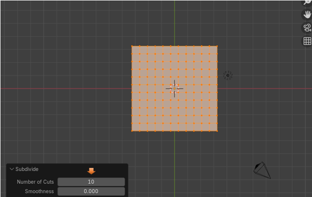
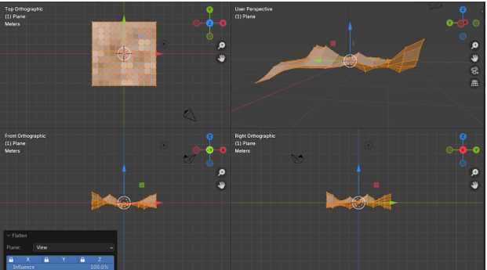

~5 Flatten~
7/28/2025
Enabling Loop Tools in Blender
Preparing to Flatten your object
What is the Flatten Tool?
The Flatten Tool is another tool inside of the Loop tool’s arsenal. This tool is where you can take any number of vertices that may be out of line, and flatten them to an even surface. So, flatten pretty much means just what it says; to flatten the mesh.
Enabling Loop Tools in Blender
To use Loop tools which incorporates this flatten tool, you need to make sure that you have them enabled in Preferences. We have gone over this several times in the last few tutorials. But you can go here if you need to add them to your application.
Preparing to Flatten your object
Well, if we are going to flatten an object, then let’s do it. So, we will want to start out with a flat plane, and then bring it in from the top view, so that it is lying on the floor. Use the Scale tool on it, and make it a bit bigger.
Bring your Plane into Edit Mode
Subdivide the Plane. We will need to Subdivide this plane first, so that we have enough geometry to work with it. Right - Click on the cube to bring up the context menu, and then choose Subdivide from it.
About 10 cuts should be good for what we are trying to do.
We want to be in Vertex view mode to start working with the mesh.
Now just start grabbing different vertices and move them up, or down to make this thing look crinkled up. You might want to go into Quad View to see this a bit better, and then begin to do your crinkling. To toggle on, or off quad view, hit these three keys on the keyboard.
We want to turn on Proportional editing before making any of these movements. Just remember once you are in the move, you can use the mouse wheel to make the influence of the move larger, or smaller.
Now just start selecting some vertices, and then with the Move tool, move them up, or down. We want something that resembled a crumpled piece of paper.
Using the Flatten Tool
Now hit the A key on the keyboard to select the entire mesh.
Now right click, and choose Flatten to flatten the entire surface.
This is what I got, but it doesn’t always go this smoothly, and you may have to use the flatten option tools at the bottom to get what you want.
The Flatten Options
You can look to the bottom right of the screen, and as long as you have not made any changes at all after you used the Flatten tool, your options for this tool should still be there.
Changing the Best Fit to Normal, will straighten the tilt on this surface, and most of the time if you find your mesh isn’t quite as flat as you would like, you can change it to Normal and things should become flatter.
You could change the Plane option to be View, in the drop-down box, and it will change things based on your view. Since the Top Orthographic was the first view in Quad view, Blender relied on this one to make the changes. But now everything but top view is off.
Moving the Influence slider will determine how much influence you want the flatten tool to have. Maybe you just want to slightly relax things.

Well, that is about all there is to the flatten tool, if you get your mesh into a predicament, where it doesn’t seem to be flattening right. Try playing around a bit with those options, to see if any other setting will straighten you out a bit more.